创建回路
Creating Circuits
通过在平面图中选中任意数量的对象（手动布线时则不选），然后点击菜单项 CI Tools > Electrical > Add Wiring...（添加布线）来创建回路。
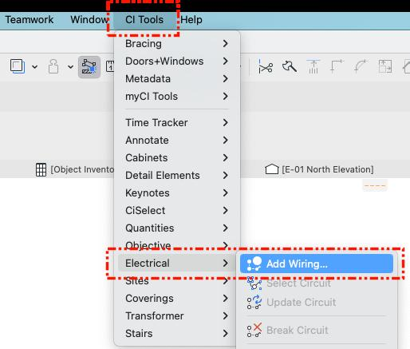
在布线 New Wire Settings（新建布线设置）对话框中：
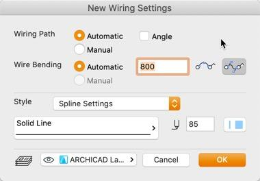
按需设置参数，点击 OK 后回路即被创建。
以下是对话框各部分的说明，与插图一一对应：
布线路径
回路的布线路径（从一个对象到另一个对象）既可以由 Electrical 工具自动计算，也可以由用户手动描摹。若未选中任何对象，则自动方式不可用。开启 Automatic（自动）时，还可以指定角度，让回路优先在沿该角度对齐的构件之间建立连接，例如灯具矩阵。
###
布线弯曲
弯曲可以是自动或手动。开启 Automatic 时，旁边的长度字段会启用，输入的值将用于回路中的每根导线。设为 Manual（手动）时，用户需要为每根导线额外点击一次，以指明所需的弯曲度。
该数值决定样条曲线在延伸过程中的弯曲幅度，数值为零时即为直线。
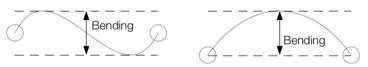
每根导线都会以样条曲线形式放置，使用所选方式（自然样条或贝塞尔样条）。
###
样式
布线样式部分定义了新回路中每根导线的属性（线型、画笔和图层）。用户可以使用旁边的下拉菜单保存并复用样式组合：
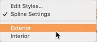
Create a circuit by selecting any number of objects in the floor plan (none for manual paths) and clicking the menu item Ci Tools > Electrical > Add Wiring...
In the wiring New Wire Settings dialog:
Set your desired settings, the circuit will be created once you've clicked OK.
A description of the dialog keyed from the illustration follows below:
Wiring Path
The path of the circuit wiring (from object to object) can either be calculated automatically by the electrical tool or manually traced by the user. Automatic will be disabled if no objects are selected. When on Automatic, an angle can optionally be specified if the circuit should prioritise connections between elements aligned along that angle, e.g. a matrix of light fixtures.
###
Wiring Bending
The bending can be automatic or manual. When on Automatic, the adjacent length field will be enabled and the entered value used for every wire in the circuit. When on Manual, the user will be prompted to make an additional click for every wire to indicate the required curvature.
The number value determines how far the spline will bend as it travels, where zero would result in a straight line.
Every wire will be placed as a spline using the selected method (natural or bezier).
###
Style
The wire style section defines the attributes (line-type, pen and layer) for every wire in the new circuit. The user can capture and reuse style combinations using the adjacent pulldown menu:
英文原文对照Official English Original
Create a circuit by selecting any number of objects in the floor plan (none for manual paths) and clicking the menu item Ci Tools > Electrical > Add Wiring...
In the wiring New Wire Settings dialog:
Set your desired settings, the circuit will be created once you've clicked OK.
A description of the dialog keyed from the illustration follows below:
Wiring Path
The path of the circuit wiring (from object to object) can either be calculated automatically by the electrical tool or manually traced by the user. Automatic will be disabled if no objects are selected. When on Automatic, an angle can optionally be specified if the circuit should prioritise connections between elements aligned along that angle, e.g. a matrix of light fixtures.
###
Wiring Bending
The bending can be automatic or manual. When on Automatic, the adjacent length field will be enabled and the entered value used for every wire in the circuit. When on Manual, the user will be prompted to make an additional click for every wire to indicate the required curvature.
The number value determines how far the spline will bend as it travels, where zero would result in a straight line.
Every wire will be placed as a spline using the selected method (natural or bezier).
###
Style
The wire style section defines the attributes (line-type, pen and layer) for every wire in the new circuit. The user can capture and reuse style combinations using the adjacent pulldown menu:
自定义 CI Electrical 符号标签 —— 为标签添加额外一行
Customise CI Electrical Symbol Labels - Adding extra line to label
要在电气符号标签中添加额外一行，请转到符号的 Settings > Labels（设置 > 标签）
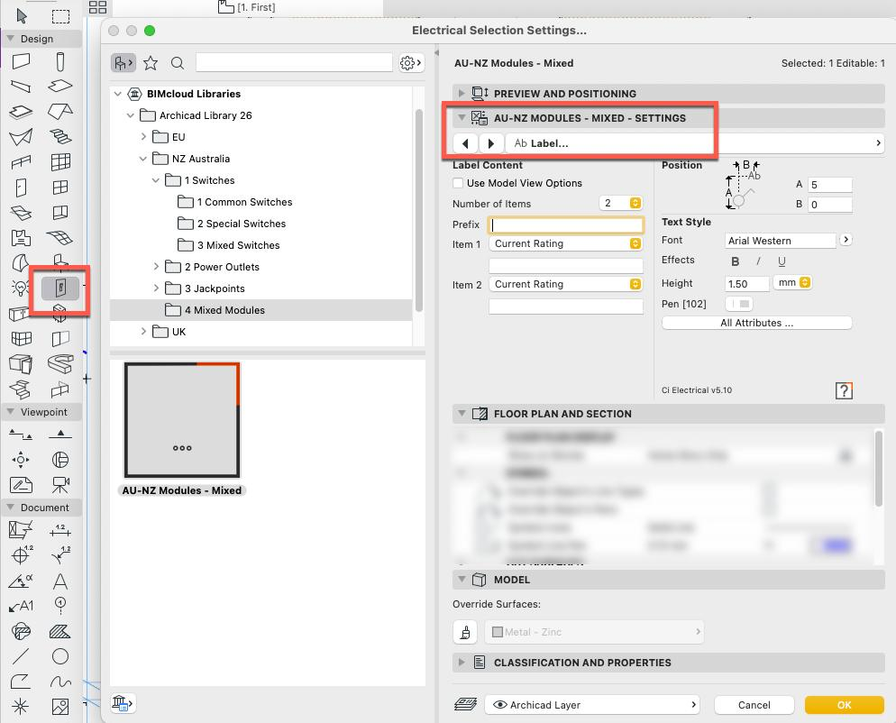
1.- 要让标签分成 2 行，请在标签中包含文本 \n。这会提示其创建一个新行。
- 移动符号以在视觉上区分它们，同时保持它们的原点相同。可以把符号看作标签，指向电气面板所在的位置。
你还可以在标签属性设置中设置引线的画笔（Pen）和线型。
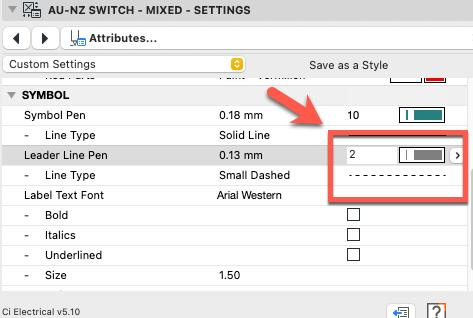
To add an extra line into the electrical symbol label, please go to the symbol' settings> Labels
1.- To split the label over 2 lines, include the text \n in the label. This will prompt it to create a new line.
- Move the symbols to separate them visually, while leaving their origin the same. Think of the symbols as labels, with pointers to the locations of the electrical plates.
You can also set the pen and line type for the leader lines in the label attributes settings.
英文原文对照Official English Original
To add an extra line into the electrical symbol label, please go to the symbol' settings> Labels
1.- To split the label over 2 lines, include the text \n in the label. This will prompt it to create a new line.
- Move the symbols to separate them visually, while leaving their origin the same. Think of the symbols as labels, with pointers to the locations of the electrical plates.
You can also set the pen and line type for the leader lines in the label attributes settings.
如何控制电气构件的模型视图
How to control the Model View of your Electrical Components
你可以从 Document/Model View/Model View Options（文档/模型视图/模型视图选项）打开“Model View Options”，操作如下：
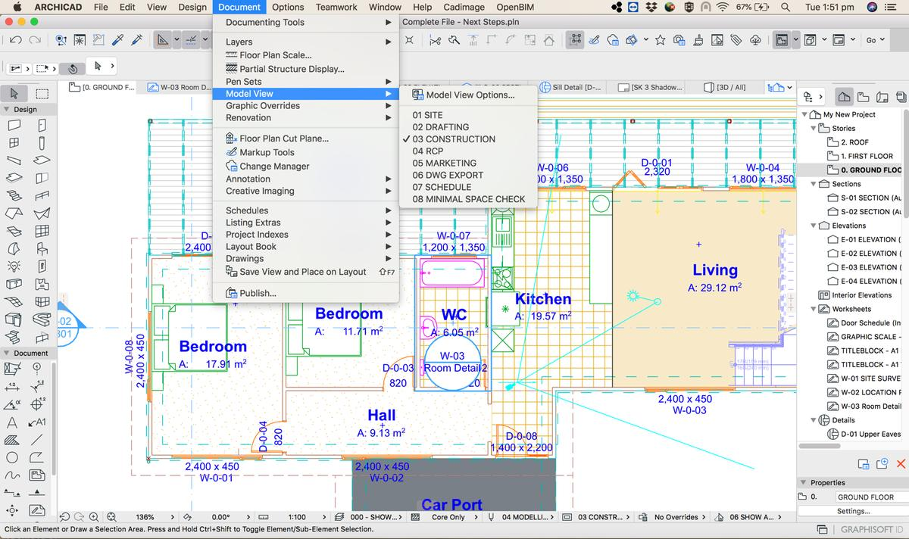
你可以设置模型视图选项，将模型显示为标准或详细。你还可以将符号设置为面板（plate）或模块（module）。
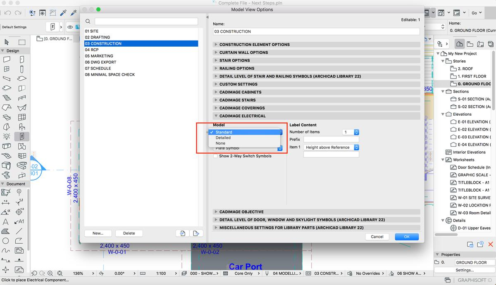
构件本身并不自带面板，面板本身也不包含构件 —— 两者必须由插件相互关联 —— 但插件必须维持它们是同一个东西的假象。通过 Model View Options，你可以在面板和构件之间切换。例如，如果 Model View Options 设置为显示面板，插件必须确保构件无法被选中。
You can open the “Model View Options” from Document/Model View/ Model View Options as follows:
You can set the model view option to show the model as standard or detailed. Also, you can set the symbol as a plate or module.
A component does not inherently have a plate, nor does a plate have components – the two have to be linked by the add-on – but the add-on has to maintain an illusion that they are the same thing. From Model View Options, you are able to switch between a plate and component. For example, if the Model View Options are set to show plates, the add-on has to ensure the components cannot be selected.
英文原文对照Official English Original
You can open the “Model View Options” from Document/Model View/ Model View Options as follows:
You can set the model view option to show the model as standard or detailed. Also, you can set the symbol as a plate or module.
A component does not inherently have a plate, nor does a plate have components – the two have to be linked by the add-on – but the add-on has to maintain an illusion that they are the same thing. From Model View Options, you are able to switch between a plate and component. For example, if the Model View Options are set to show plates, the add-on has to ensure the components cannot be selected.
如何放置 3D 墙面板
How to place 3D Wall Plates
使用 Electrical 工具，你可以自定义 3D 面板的设置。你可以更改面板的尺寸或位置，并且可以对 3D 中面板的构件和属性进行可配置设置。
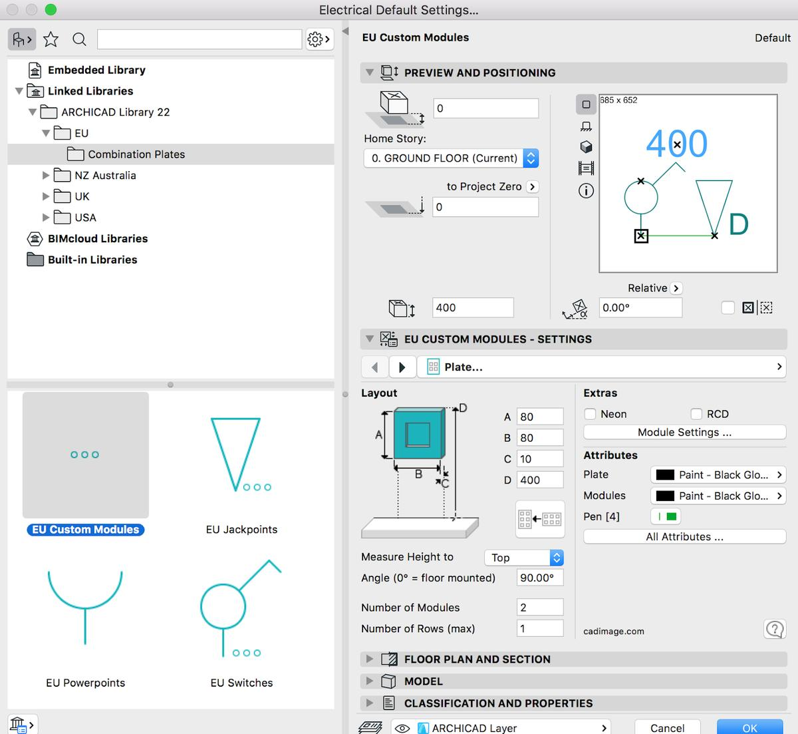
- 点击模块设置（module setting）以查看各个模块的设置，
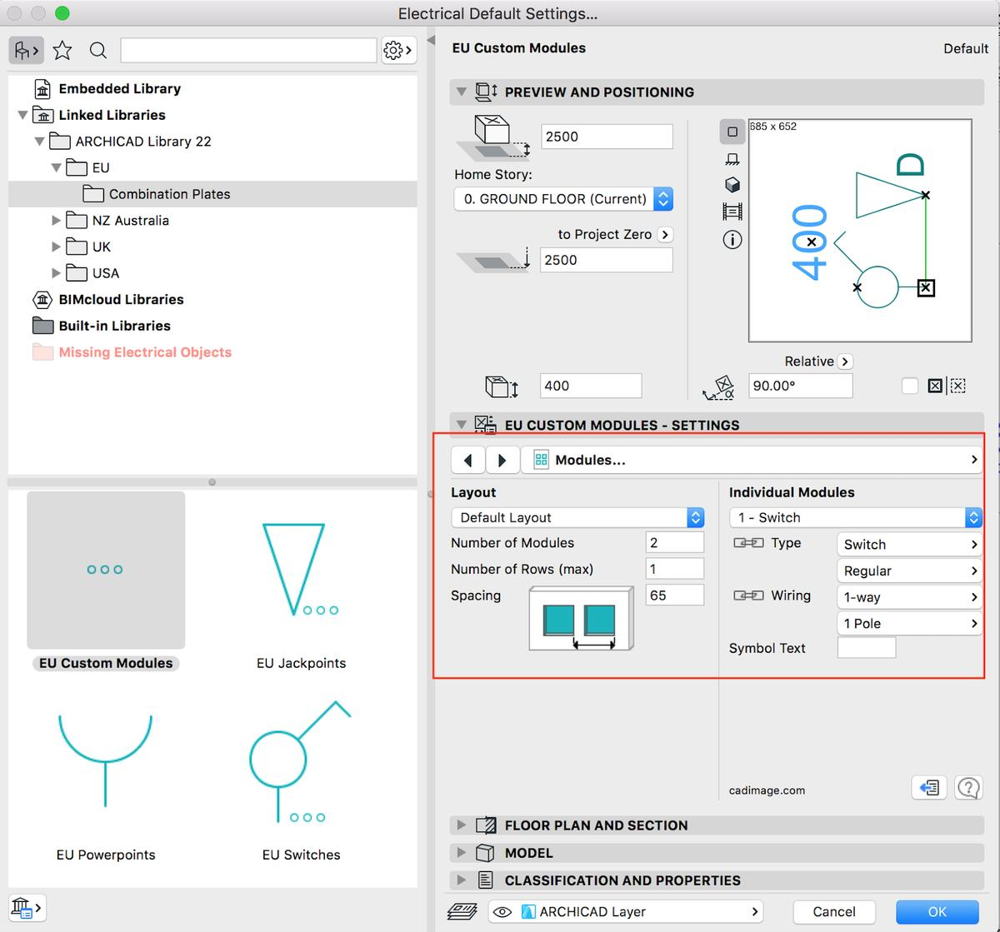
- 若要更改面板的属性，需要点击“all attribute”（全部属性）。
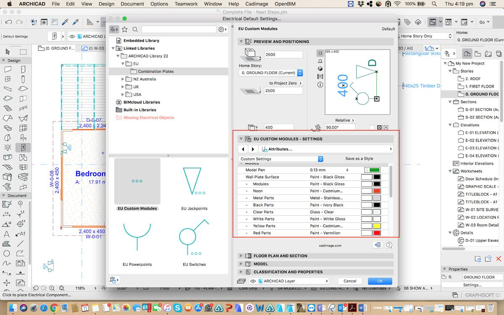
- 在“measure height”（测量高度）中，有三个选项，包括“Top”（顶部）、“Centre”（居中）和“Base”（底部）。你还可以更改模块数量和行数。
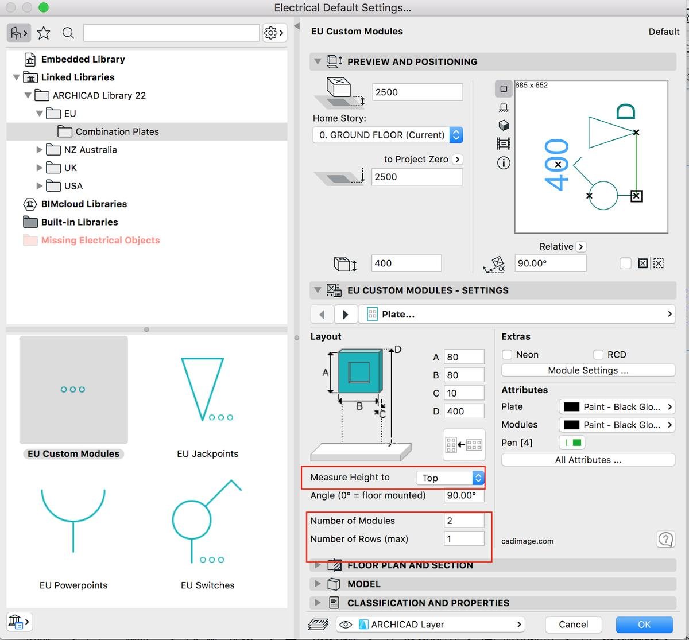
Using electrical Tool, you are able to customise the setting of 3D plates. You can change the size or position of the plates and you also have configurable options for the components and attribute of plates in 3D.
- Click on module setting to view the individual module setting,
- For changing the attribute of plates, you need to click on “all attribute”.
- In “measure height”, you have three options including “Top”, “Centre” and “Base”. You can aslo change the number of module and number of rows.
英文原文对照Official English Original
Using electrical Tool, you are able to customise the setting of 3D plates. You can change the size or position of the plates and you also have configurable options for the components and attribute of plates in 3D.
- Click on module setting to view the individual module setting,
- For changing the attribute of plates, you need to click on “all attribute”.
- In “measure height”, you have three options including “Top”, “Centre” and “Base”. You can aslo change the number of module and number of rows.
概述
Overview
Cadimage Electrical 工具旨在简化电气布局的创建过程，让您能够放置电气符号、创建回路并生成明细表。
Cadimage Coverings 让您能够为通常在 ARCHICAD 中创建的标准建筑构件（即墙体、屋顶、柱或楼板）增添厚度与真实感。
The Cadimage Electrical Tool aims to simplify the process of creating electrical layouts by allowing you to place electrical symbols, create circuits and schedule the content.
Cadimage Coverings allows you to add depth and realism to the standard architectural elements (namely walls, roofs, columns or slabs) usually created in ARCHICAD.
英文原文对照Official English Original
The Cadimage Electrical Tool aims to simplify the process of creating electrical layouts by allowing you to place electrical symbols, create circuits and schedule the content.
Cadimage Coverings allows you to add depth and realism to the standard architectural elements (namely walls, roofs, columns or slabs) usually created in ARCHICAD.
ProKit Electrical —— 从这里开始
ProKit Electrical – Start here
Electrical 工具可快速放置针对你所在地区量身定制的 3D 电气构件。该工具尤其适合用于放置墙壁插座、开关以及其他各种类型的插座。
它内置了一个内容丰富且功能强大的构件库，涵盖以下国家和地区的常用做法：
European Union（欧盟）
India（印度）
Sub Saharan Africa（撒哈拉以南非洲）
United Kingdom（英国）
United States of America（美国）
以上内容可通过 ProKit 专用的 Electrical 工具访问。
Libpack 加载（自 ARCHICAD 29 起）
需要注意的是，ProKit Electrical 工具要求将 Electrical Libpack 手动加载到项目中。
与所有库一样，此操作通过库管理器（Library Manager）完成。请注意，所加载的 Libpack 必须在单个文件层级上选中，而不能像早期 ARCHICAD 版本那样在文件夹层级上选中。
库管理器（Library Manager）通过 File > Library Manager 下拉菜单打开。

进入库管理器后，我们将使用“Add”按钮添加 Electricals Libpack。
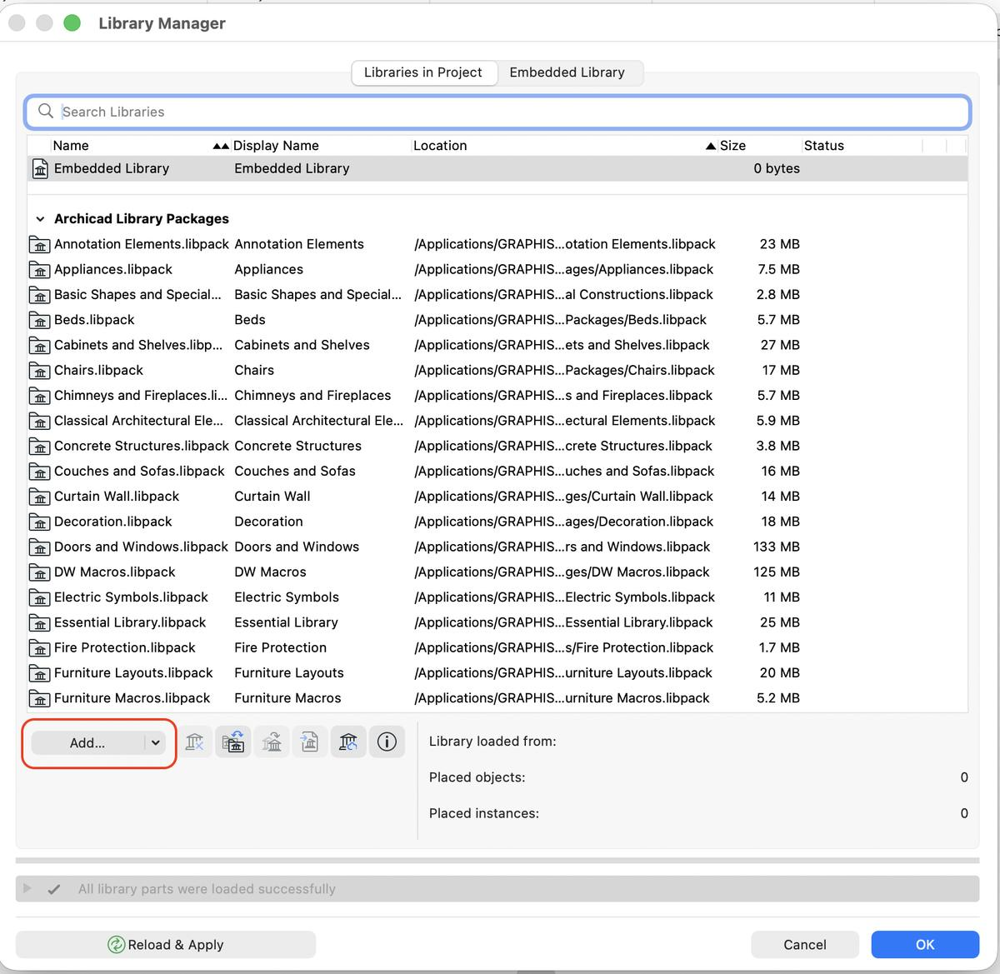
这可以导航到位于 ARCHICAD 安装文件夹中的 ProKit Libpack 文件夹。
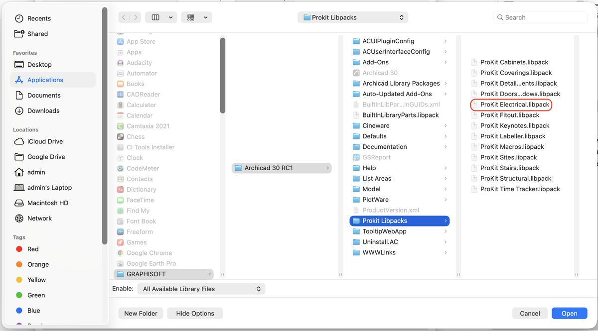
这将加载 Electrical Libpack 及相关的宏（Macros）。
此后 Electrical 构件即可在 Electrical 工具中使用。
重要：
如果 Electrical 工具未显示在默认 ARCHICAD 工作环境左侧的工具箱中，可以通过在工具箱上右键单击将其添加。工具箱会弹出一个对话框，用于添加 Electrical 工具。

这样即可将 Electrical 工具添加到工具箱中。
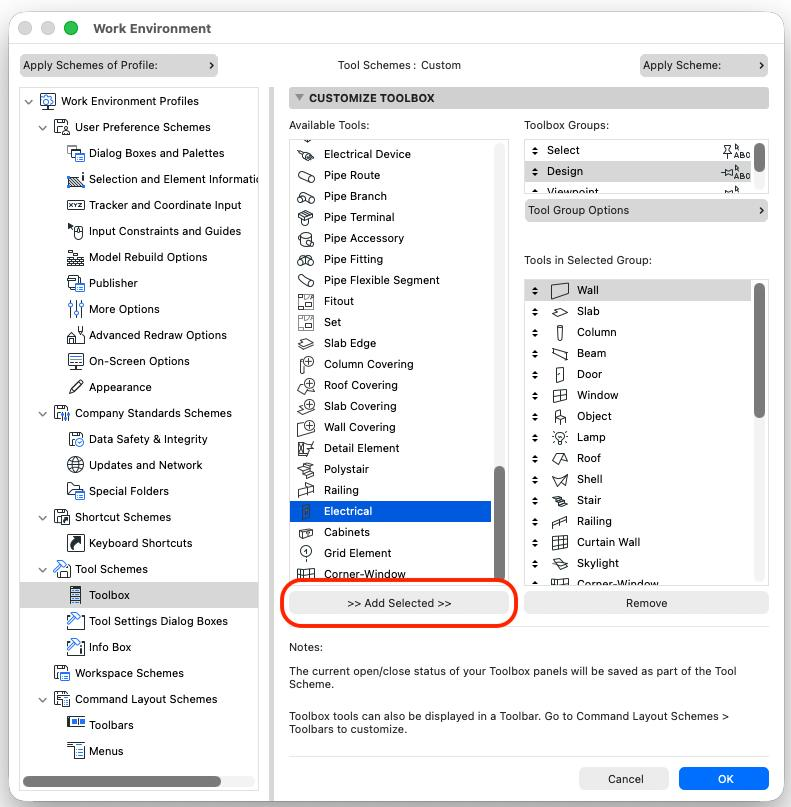
Electrical 工具现在就会显示出来，建议保存工作环境（Work Environment）以免每次都要重新添加，不过 ARCHICAD 通常会保留这些设置。
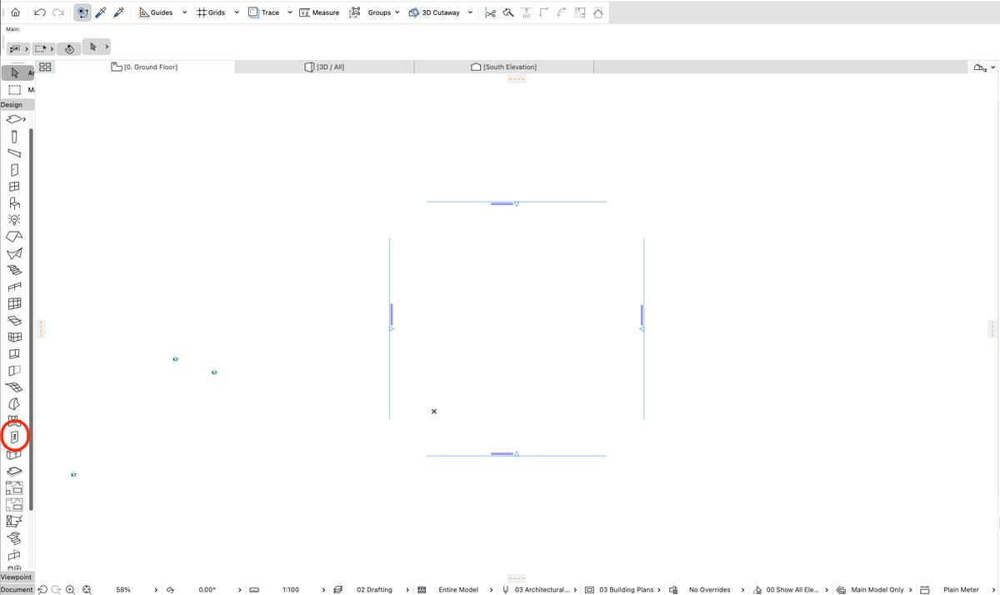
放置 Electrical 构件
在 Archicad 中，Electrical 库构件通过 ProKit Electrical 工具放置。
选中该工具后，即可打开设置面板并放置任意 Electrical 构件。
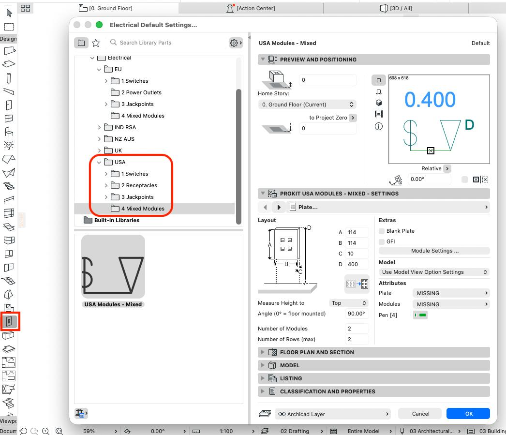
Electrical 工具还可以自动为选定的 ARCHICAD 或 Electrical 构件添加布线。
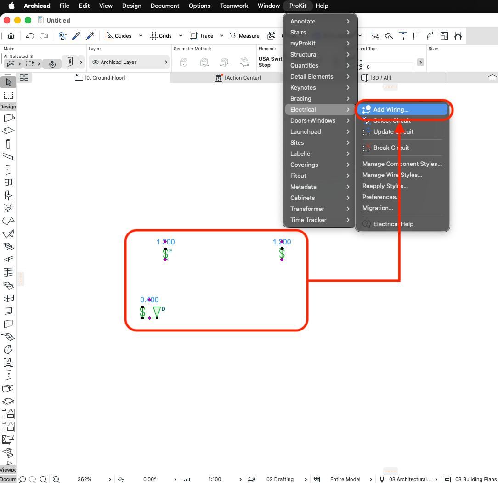
这样可以设置布线样式（Wiring Style），并放置相应的布线。
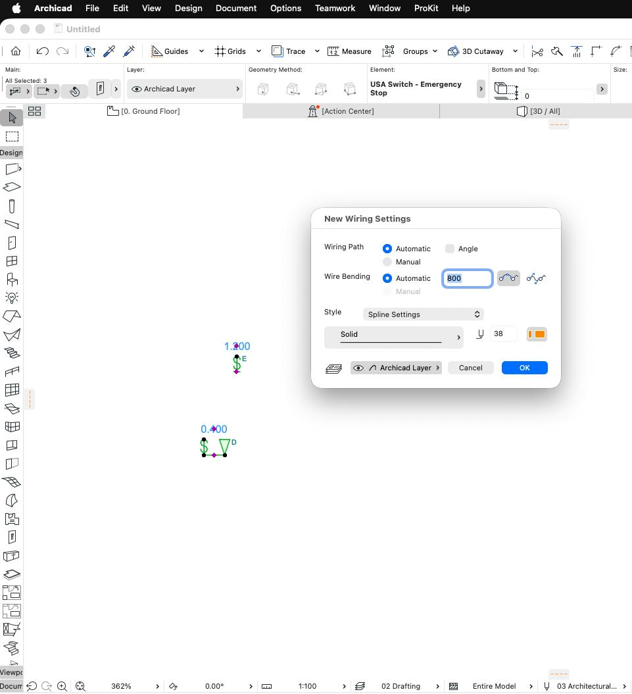
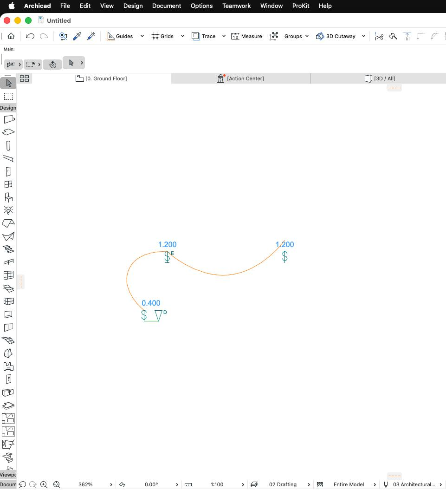
关于 Electrical 工具各项功能的更多信息，请参阅知识库文章。
The Electrical Tool allows for very quick placement 3D Electrical components tailor made to your region. This Tool is especially effective where to place Wall-sockets, switches and any other type of outlets.
It contains an extensive sophisticated library of Components as used in the following Countries and Regions:
European Union
India
Sub Saharan Africa
United Kingdom
United States of America
These are accessible through the ProKit Specific Electrical Tool.
Libpack loading (since ARCHICAD 29)
It is important to note that the ProKit Electrical Tool requires the Electrical Libpack to be manually loaded into the project.
As with all Libraries this is done through the Library Manager. Please note that the Libpacks that are loaded need to be selected at an individual file and not at a folder level as was the case in earlier ARCHICAD versions.
The Library Manager is accessed through the File>Library Manager dropdown.
Once in the Library Manager we will use the “Add” button to add the Electricals Libpack.
This allows navigation to the ProKit Libpack folder located in the ARCHICAD installation folder.
This will load the Electrical Libpack and associated Macros.
The Electrical Objects will now be available in the Electrical Tool.
IMPORTANT:
If the Electrical Tool is not showing in the toolbox on the left in the default ARCHICAD work environment, they can be added by right clicking on in the Toolbox. The Toolbox will bring up a dialog to add the Electrical Tool.
This will allow adding the Electrical Tool to the Toolbox.
The Electrical Tool will now show up, it is recommended to save the Work Environment to avoid having to add this, although ARCHICAD should retain them.
Placing an Electrical Object
The Electrical library objects are placed with the Prokit Electrical Tool in Archicad.
Once the tool is selected, the settings can be opened and any Electrical Object placed.
The Electrical Tool can also automatically add wiring to selected ARCHICAD or Electrical Objects.
This will allow the Setting of Wiring Style and an associated wiring will be placed.
For more detailed information on the different Electrical Tool features please see the Knowledge-base articles.
英文原文对照Official English Original
The Electrical Tool allows for very quick placement 3D Electrical components tailor made to your region. This Tool is especially effective where to place Wall-sockets, switches and any other type of outlets.
It contains an extensive sophisticated library of Components as used in the following Countries and Regions:
European Union
India
Sub Saharan Africa
United Kingdom
United States of America
These are accessible through the ProKit Specific Electrical Tool.
Libpack loading (since ARCHICAD 29)
It is important to note that the ProKit Electrical Tool requires the Electrical Libpack to be manually loaded into the project.
As with all Libraries this is done through the Library Manager. Please note that the Libpacks that are loaded need to be selected at an individual file and not at a folder level as was the case in earlier ARCHICAD versions.
The Library Manager is accessed through the File>Library Manager dropdown.
Once in the Library Manager we will use the “Add” button to add the Electricals Libpack.
This allows navigation to the ProKit Libpack folder located in the ARCHICAD installation folder.
This will load the Electrical Libpack and associated Macros.
The Electrical Objects will now be available in the Electrical Tool.
IMPORTANT:
If the Electrical Tool is not showing in the toolbox on the left in the default ARCHICAD work environment, they can be added by right clicking on in the Toolbox. The Toolbox will bring up a dialog to add the Electrical Tool.
This will allow adding the Electrical Tool to the Toolbox.
The Electrical Tool will now show up, it is recommended to save the Work Environment to avoid having to add this, although ARCHICAD should retain them.
Placing an Electrical Object
The Electrical library objects are placed with the Prokit Electrical Tool in Archicad.
Once the tool is selected, the settings can be opened and any Electrical Object placed.
The Electrical Tool can also automatically add wiring to selected ARCHICAD or Electrical Objects.
This will allow the Setting of Wiring Style and an associated wiring will be placed.
For more detailed information on the different Electrical Tool features please see the Knowledge-base articles.
更新日志 —— Electrical
Release Notes - Electrical
更新日志 —— Electrical —— 5.12
缺陷
ELE-113 使用空格键放置按钮时未跳转到与墙体的对齐位置（AC23 mac）
ELE-128 插件获取到的点击点坐标有误
ELE-142 在 v26 中，某些情况下空格键点击放置模式无法正常工作
ELE-143 可设置填充的符号实际上没有显示任何填充
改进
ELE-111 在 AC23 中允许为符号添加填充
任务
ELE-139 Electrical 需要针对 macos ARM 进行构建
Release notes - Electrical - 5.12
Bug
ELE-113 place with space button not jump align position to the wall AC23 mac
ELE-128 The add-on is getting the wrong co-ordinates for the clicked point
ELE-142 The spacebar-click placement mode doesn't work in v26 in certain cases
ELE-143 Symbols where Fill can be set do not actually show any fill
Improvement
ELE-111 Allow to add fills to symbols in AC23
Task
ELE-139 Electrical needs to be built for macos ARM
英文原文对照Official English Original
Release notes - Electrical - 5.12
Bug
ELE-113 place with space button not jump align position to the wall AC23 mac
ELE-128 The add-on is getting the wrong co-ordinates for the clicked point
ELE-142 The spacebar-click placement mode doesn't work in v26 in certain cases
ELE-143 Symbols where Fill can be set do not actually show any fill
Improvement
ELE-111 Allow to add fills to symbols in AC23
Task
ELE-139 Electrical needs to be built for macos ARM
观看：概述网络研讨会录像（23 分钟）
Watch: Overview webinar recording (23 mins)
在这场网络研讨会中，Josh 向您展示如何开始使用 CI Electrical 工具。具体而言，他演示了如何：
- 单击即可放置电气符号
- 创建动态关联的回路
In this webinar, Josh shows you how to get started with the Ci Electrical Tool. Specifically, he shows you how to:
- Place electrical symbols with a single click
- Create dynamic, linked circuits
英文原文对照Official English Original
In this webinar, Josh shows you how to get started with the Ci Electrical Tool. Specifically, he shows you how to:
- Place electrical symbols with a single click
- Create dynamic, linked circuits
布线样式管理器
Wire Style Manager
点击菜单 Cadimage > Electrical > Manage Wire Style（管理布线样式）即可管理属性样式。
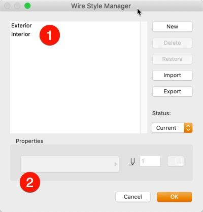
以下是对话框各部分的说明，与插图一一对应：
- 布线样式列表。其工作方式与上面的构件样式管理器（Component Styles Manager）相同，用于创建、编辑或删除条目。名称可以直接在列表中编辑，也可以一次编辑多个条目。选中多个条目时，下方显示的是第一个条目的详细信息，但所做的修改将应用于所有选中的样式。
- 所选样式的布线属性，包括线型和画笔（Pen）。
You can manage the attribute styles by clicking the menu Cadimage > Electrical > Manage Wire Style
A description of the dialog keyed from the illustration follows below:
- The list of wire styles. This works in the same way as the Component Styles Manager above for creating, editing or deleting items. The name can be directly edited in the list, and multiple items can be edited at once. When multiple items are selected, the details of the first will be displayed below, but any changes will apply to all selected styles.
- The wire attributes for the selected style, including the line style and pen.
英文原文对照Official English Original
You can manage the attribute styles by clicking the menu Cadimage > Electrical > Manage Wire Style
A description of the dialog keyed from the illustration follows below:
- The list of wire styles. This works in the same way as the Component Styles Manager above for creating, editing or deleting items. The name can be directly edited in the list, and multiple items can be edited at once. When multiple items are selected, the details of the first will be displayed below, but any changes will apply to all selected styles.
- The wire attributes for the selected style, including the line style and pen.